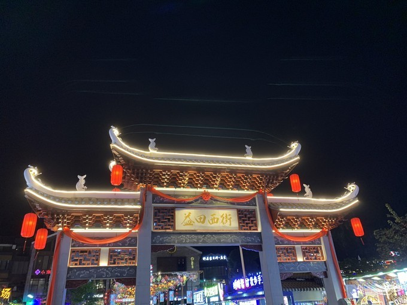

Добро пожаловать в туристическую сеть Гуйлиня~
Добро пожаловать в туристическую сеть Гуйлиня~
издатель:nanaвремя：2021-05-06 12:30
Touring Guilin обычно заключается в том, чтобы сначала играть в городском районе Гуйлиня, а затем переезжать в округ Яншо или округ Луншэн. То есть в первый день большинство людей будут играть в городском районе Гуйлиня, Живописные места в городском районе Гуйлиня относительно сконцентрированы, поэтому вы можете посетить несколько живописных мест за один день, например Холм слоновьего хобота, дворец Цзинцзян на пике уединенной красоты, ночное посещение двух рек и четырех озер, башен-близнецов Солнца и Луны; в то же время вы можете прогуляться по многим улицам с едой, таким как переулок Дунси и пешеходная улица Чжэнъян-роуд.
На обед мы поели на пешеходной улице Zhengyang Road возле Jingjiang Wangfu, после чего прогулялись вдоль реки Ли: пешеходная улица Zhengyang - улица Shangshui - восточная и западная улочки - здание Xiaoyao - мост Jiefang - улица Linjiang.
После ужина на Кросс-стрит я отправился прямо на ночную экскурсию по двум рекам и четырем озерам: Рыбацкая пристань Сяншань - Пристань Вэньчан 1,5-часовая прогулка на лодке: река Ли - озеро Жун - озеро Гуй - озеро Мулонг - озеро Шань - река Таохуа
Обязательные предметы на протяжении всего маршрута: бамбуковый плот Лицзян + бамбуковый плот по реке Юлонг + западная улица Яншо. Отметим, что этот день, безусловно, самый красочный день поездки в Гуйлинь, ядро ядра. Как говорится, «ландшафт Гуйлиня — лучший в мире, а ландшафт Яншо — лучший в Гуйлине». Дружба напоминает вам, что нельзя плыть по рекам Ли и Юйлун в дождливые дни.Зеленая речная вода станет водой Хуанхэ в дождливые дни.Необходимо выбрать солнечный день.
Однодневные туры и групповые туры обычно возвращаются в городской район Гуйлиня в тот же день, но я лично предлагаю вам остаться в Яншо на 2 дня.Ядро Гуйлиня находится в Яншо. Поэтому после однодневной поездки я решил остаться в уезде Яншо и остановиться недалеко от Западной улицы.